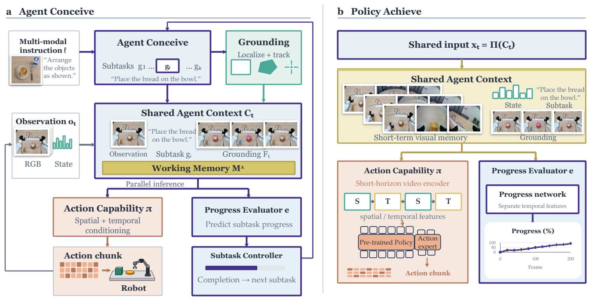
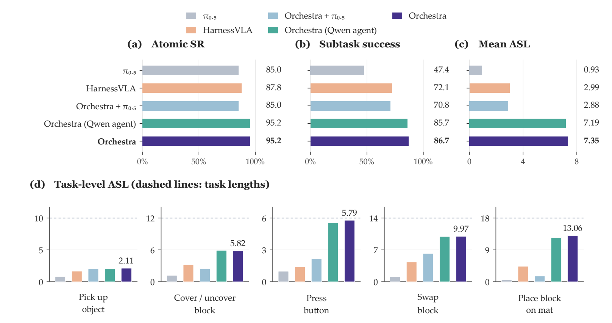
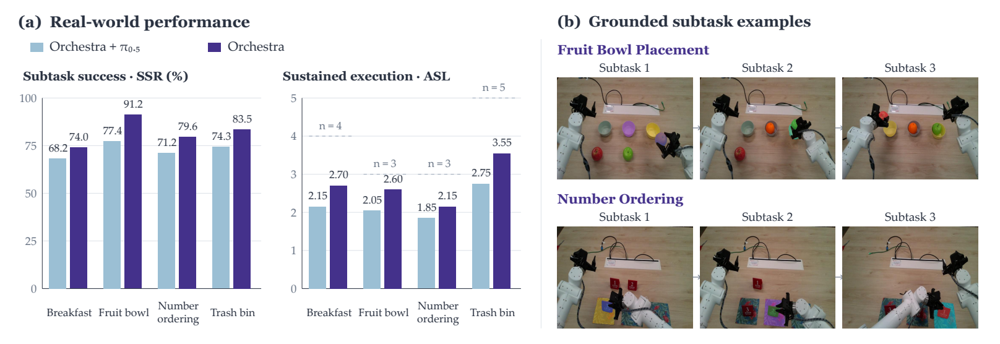

Multimodal instructions. Coordinated action.
Orchestra.
Let the Mind Conceive,
Let the Hand Achieve.
Following Multimodal Instructions for
Long-Horizon Robotic Manipulation
Task planning · Visual grounding · Working memory · Progress-driven execution
THE FRAMEWORKReason → Ground → Act → Evaluate

01 / Overview
A shared context.
A coordinated robot.
Following a long instruction requires a robot to remember what it has done, identify what to manipulate next, and decide when each step is complete. Orchestra brings these decisions together in an agent framework that coordinates planning, perception, and execution around an action policy.
The task agent converts a complete instruction into ordered subtasks and grounds the relevant objects in the scene. An adapted π₀.₅ policy generates actions from the active subtask, spatial prompts, recent images, and robot state. A separately trained progress evaluator controls subtask transitions. The framework retains task records across the episode and refreshes local memory and grounding at each transition.
We evaluate Orchestra on RMBench, RMBench-Compose, and four real-world manipulation tasks. RMBench-Compose tests long-horizon composition after training on atomic skills and short trajectories.
RMBench68.22%
Mean success rate
+26.22 percentage points over Mem-0RMBench-Compose7.35
Average success length
2.46× HarnessVLAReal-world manipulation2.75
Average success length
+25.0% over Orchestra with base π₀.₅02 / In the real world
One instruction.
Many steps forward.
Four manipulation tasks, from preparing breakfast to arranging objects.
Demonstrations are shown at 2× speed.
Fruit bowl placement
3 subtasksNumber ordering
3 subtasksTrash bin placement
5 subtasks03 / Experiments
Built for the long horizon.
Memory, composition, and real-world manipulation.
Metrics. Success rate measures task completion. Subtask Success Rate (SSR) measures success at the subtask level. Average Success Length (ASL) counts consecutive successful subtasks from the beginning of an episode.
RMBench: memory-dependent manipulation
Across nine tasks, Orchestra achieves 68.22% mean success, compared with 42.00% for Mem-0 and 26.78% for HarnessVLA.
| Method | Mean success rate |
|---|---|
| π₀.₅ | 10.44% |
| MemoryVLA (QwenOFT) | 41.78% |
| Mem-0 | 42.00% |
| HarnessVLA (Codex) | 26.78% |
| Orchestra | 68.22% |
Full comparison across all nine tasks — Table 1
| Method | Observe & Pick Up | Rearrange Blocks | Put Back Block | Swap Blocks | Swap T | Battery Try | Blocks Ranking Try | Cover Blocks | Press Button | Mean |
|---|---|---|---|---|---|---|---|---|---|---|
| DP | 1% | 0% | 0% | 11% | 20% | 10% | 10% | 0% | 0% | 5.78% |
| ACT | 1% | 29% | 0% | 2% | 2% | 19% | 0% | 0% | 0% | 5.89% |
| π₀.₅ | 9% | 13% | 11% | 24% | 15% | 16% | 6% | 0% | 0% | 10.44% |
| X-VLA | 9% | 13% | 18% | 16% | 3% | 26% | 1% | 2% | 0% | 9.78% |
| QwenOFT | 0% | 0% | 0% | 0% | 0% | 14% | 37% | 0% | 0% | 5.67% |
| MemER | 7% | 17% | 0% | 14% | 7% | 27% | 0% | 6% | 0% | 8.67% |
| Mem-0 | 4% | 89% | 90% | 67% | 14% | 28% | 18% | 68% | 0% | 42.00% |
| MemoryVLA (OpenVLA) | 0% | 22% | 50% | 17% | 9% | 25% | 12% | 40% | 0% | 19.44% |
| MemoryVLA (QwenOFT) | 2% | 53% | 81% | 76% | 9% | 33% | 53% | 69% | 0% | 41.78% |
| HarnessVLA (Codex) | 10% | 32% | 62% | 18% | 5% | 24% | 20% | 26% | 44% | 26.78% |
| Orchestra | 81% | 95% | 81% | 86% | 10% | 30% | 65% | 69% | 97% | 68.22% |
Best results in each column are shown in bold.
RMBench-Compose: composition beyond the training horizon
RMBench-Compose spans five environments with 6–18 subtasks per instruction. Policies train on atomic skills and short trajectories; evaluation requires completing longer sequences as object states change.

Figure 3. Atomic skill success, compositional performance, and per-environment ASL. Dashed lines indicate task lengths.
Orchestra reaches 7.350 ASL, compared with 2.986 for HarnessVLA. Removing task orchestration, visual memory, or spatial grounding reduces mean ASL to 1.502, 2.500, and 5.814, respectively.
Component ablations by environment — Figure 4
| Configuration | Pick up object | Cover / uncover block | Press button | Swap block | Place block on mat | Mean |
|---|---|---|---|---|---|---|
| Orchestra | 2.11 | 5.82 | 5.79 | 9.97 | 13.06 | 7.350 |
| Without spatial grounding | 2.00 | 2.81 | 5.02 | 7.29 | 11.95 | 5.814 |
| Without visual memory | 1.69 | 2.47 | 1.28 | 4.87 | 2.19 | 2.500 |
| Without task orchestration | 1.07 | 1.89 | 1.20 | 2.30 | 1.05 | 1.502 |
All values are ASL.
Real-world manipulation
We evaluate four tasks using 20 matched instructions per task and configuration, totaling 80 rollouts per configuration. Instructions contain 3–5 subtasks.

Figure 5. Real-world performance and examples of object grounding across successive subtasks.
| Task | Subtasks | ASL: Orchestra with base π₀.₅ | ASL: Orchestra |
|---|---|---|---|
| Breakfast Preparation | 4 | 2.15 | 2.70 |
| Fruit Bowl Placement | 3 | 2.05 | 2.60 |
| Number Ordering | 3 | 1.85 | 2.15 |
| Trash Bin Placement | 5 | 2.75 | 3.55 |
| Mean | 2.20 | 2.75 |
The spatially and temporally conditioned policy improves mean SSR from 72.77% to 82.09% and mean ASL from 2.20 to 2.75.